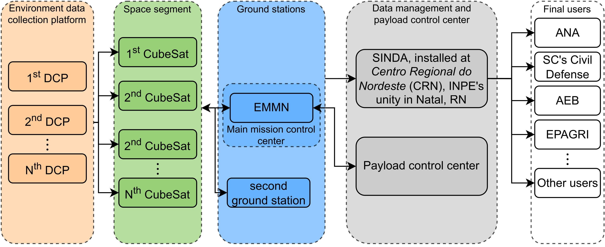
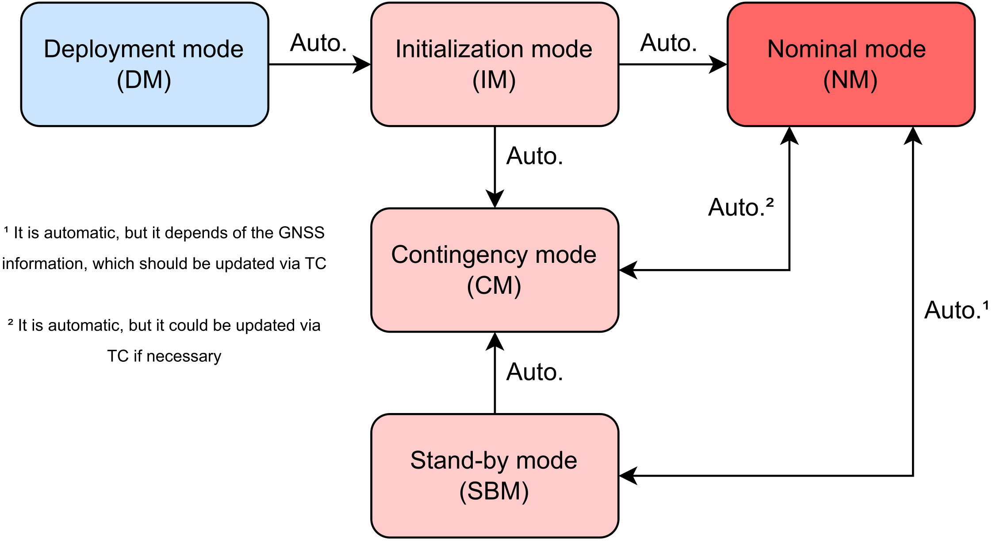
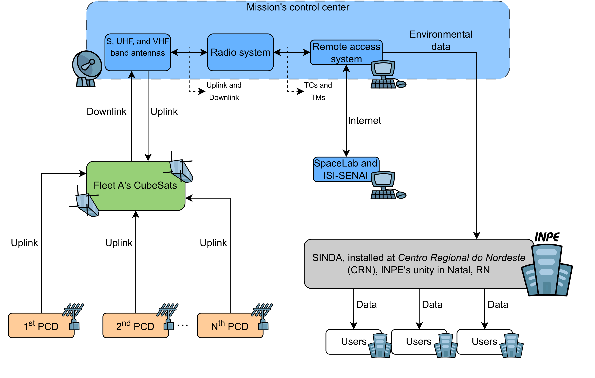

Concept of Operations
Introduction
This chapter describes the CONOPS for Catarina-A1, a satellite within the Catarina Constellation, providing insights into its on-orbit operations and mission timeline.
Following this, a concise overview of the mission, including its objectives and structure, is presented. Subsequently, the operational modes of the payloads (EDC and ExpLoRa) and service module are outlined, showcasing the interactions between subsystems and between the Space and Ground Segments for a comprehensive understanding of the mission’s dynamics.
Mission description
Catarina-A1 was specifically designed to contribute to the Catarina Constellation mission, aimed at environmental data collection applications. Its primary objective is to gather data from one DCP located in SC for a technological demonstration for the next space systems of the Catarina Constellation. A secondary goal is to contribute as part of the SBCD. The collected data is then redistributed through the SINDA.
For this matter, Catarina-A1 will use the EDC, a INPE’s payload specifically developed for CubeSats, designed to receive data from DCP. The satellite will also have a secondary payload, ExpLoRa, developed by SpaceLab’s team. For the service module, the FloripaSat-2 platform will be used (which is heavily based on the FloripaSat-1 platform).
As previously mentioned, the primary payload is the EDC, developed by INPE, which enables communication between CubeSats and DCP. On the other hand, ExpLoRa serves as a secondary experiment, showcasing the potential use of CubeSats in IoT applications. This approach aligns with the broader trend of integrating satellite communications and the IIoT across diverse sectors, including agriculture, energy, and transportation.
For the service module, it is based on the FloripaSat-1 platform, and its main function is to transmit the received data to the Ground Segment through the main communication link provided by the satellite.
Operational mission objectives
The main mission objectives outlined in Mission objectives revolve around the reception and transmission of data from DCP. Additionally, a secondary objective emerged following the definition of the post-SRR payload, aimed at showcasing CubeSats’ utility in an IoT application. In summary, the mission objectives can be succinctly summarized as follows:
Mission structure
Catarina Constellation’s mission architecture, presented in Fig. 16, is designed to achieve the objectives set for the mission as a whole. We will therefore discuss how the Catarina-A1 fits into this architecture, presenting its particularities.
{kind=link}

Fig. 16 Catarina Constellation’s mission architecture.
Space Segment
The Space Segment, as depicted in Fig. 16, consists of multiple CubeSats, each of them with a service module and its payloads. It is noteworthy to mention that the Space Segment is designed with scalability in mind, allowing for future expansion by integrating additional CubeSats into the constellation. This expandability enhances the mission’s resilience and facilitates maintenance, ensuring the sustainability of the Space Segment over time.
For the Catarina-A1, the service module is based on the reliable and proven FloripaSat-1, which provides the necessary infrastructure to host and operate the payloads efficiently. This platform encompasses essential subsystems such as EPS, TTC, and OBDH.
The satellite carries two payloads, contributing to its functionality and mission objectives. The main payload is the EDC, which is capable of receiving data from DCP and the second one is the ExpLoRa, which utilizes LoRa technology to communicate with a specific SpaceLab’s application.
Ground Segment
As presented in Fig. 16, the Ground Segment consists of (i) DCP, (ii) the ground stations and (iii) SINDA, installed at Centro Regional do Nordeste (INPE’s unity).
Currently, SBCD encompasses more than 1,000 stations, and due to its inherent scalability, it could expand to cover more areas in Brazil or even in other parts of South America, particularly remote ones. Regarding Catarina-A1, the satellite will collect data from a specific DCP, located at Santa Catarina.
It is expected that there will be at least one ground station for the Catarina Constellation, which will be the mission’s control center, the EMMN. However, other ground stations could be used as “secondary” ones. In Catarina-A1’s case, the EMMN will be the main one, and a second ground station is planned, which will probably be installed at SpaceLab’s facilities.
It is therefore generally expected that the DCP will transmit data, which will be received by the satellite’s EDC. This would then be relayed to the EMMN and then directed to SINDA for processing and distribution to users.
Mission control
The EMMN’s TTC ground stations are responsible for tracking and controlling the satellite. In the baseline design, the EMMN is used as the main tracking station. EMMN was designed to operate in the VHF, UHF and S-Band, receiving payload-generated data and telemetry, as well as transmitting telecommands for satellites operating in low orbits.
The station performs autonomous tracking of several satellites according to a previous schedule and a scale of priorities. A ClientServer network design allows users to input and receive data remotely. Technical characteristics of the station can be found in [29].
Mission operation modes
To enhance the comprehension of the satellite’s operational modes, refer to the diagram in Fig. 17. The depicted modes include: DM, IM, NM, SBM, and CM.
{kind=link}

Fig. 17 Diagram of the satellite’s operation modes.
Each mode will be delineated below, elucidating the specific occurrences during each phase and the transition mechanisms between them.
Deployment Mode (DM)
Throughout the launch phase, the satellite operates in DM, during which all functions are temporarily deactivated to safeguard it amid the turbulent conditions. Following a successful launch and separation from the launch vehicle, the satellite is energized, seamlessly transitioning to the subsequent operating mode, the IM.
Initialization mode (IM)
In IM, the satellite undergoes an automatic power up, initiating the system initialization process. This sequence commences with the OBDH subsystem, which systematically attempts to initialize the remaining subsystems in a specific order to assess their status and functionality.
During this phase, the antenna remains closed, a process anticipated to last 45 minutes. Upon completion of this period, the antennas will be deployed, and efforts are made to (i) periodically transmit a beacon, and (ii) determine the satellite’s initial orientation (attitude). Once a communication link is established with the ground station, the satellite can transition to NM, CM or SBM, depending on its orientation and status at the time.
Nominal mode (NM)
This mode represents a power-negative state where the entire satellite is active. In this operational phase, both EDC and ExpLoRa are functional – EDC receives data from DCP, while ExpLoRa receives information from a SpaceLab application. The activation and deactivation of this mode are controlled by GNSS information, ensuring that the satellite remains in NM while within national territory.
{kind=link}

Fig. 18 Description of the NM operations.
Regarding the primary mission objective, illustrated in Fig. 18, the satellite receives data from DCP and transmits it to the main mission’s control center. In this center, the SpaceLab and ISI-SE teams can remotely access the system for telecommand transmissions, and analysis/filtering of the received data.
EDC and ExpLoRa activation
The EDC is essential for receiving data from the DCP stations, which is the main objective of this mission. However, in order to optimize energy use and maximize operational efficiency, the EDC will only be activated when the satellite is passing over Brazilian territory. This will allow the EDC to collect data from the DCP more efficiently and transmit it to the Ground Segment, conserving energy when data collection is not possible.
The decision of when to activate and deactivate the EDC will be based on the satellite’s orbit propagation, which will be calculated using regularly updated TLE. TLE are widely used format for describing a satellite’s orbit. It consists of two lines of textual data that contain information about the orbital element epoch, inclination, right ascension of the ascending node, eccentricity, argument of perigee, mean anomaly, and mean motion of the satellite.
The satellite’s TLE will be received periodically from the Ground Segment. The mission control team will calculate the satellite’s future position based on the TLE and determine the period when the satellite will be over Brazil. During this period, the EDC will be activated and begin collecting data from the DCP. Once the satellite exits the coverage area, the EDC will be deactivated until the next pass over Brazil.
The idea is to activate the ExpLoRa considering the same rule: only when the satellite is passing over Brazilian territory.
This approach of operating the EDC and ExpLoRa based on orbit propagation allows for efficient utilization of satellite resources while maximizing the amount of data collected and transmitted to the Ground Segment.
EDC and ExpLoRa deactivation
Once the satellite moves beyond national territory, both payloads are deactivated to conserve energy. Consequently, the satellite transitions into the SBM, with only the service module (comprising the OBDH, EPS, and TTC) remaining powered.
Stand-By mode (SBM)
The OBDH will then begin monitoring voltage and current levels, battery temperature, and other vital data gathered by the EPS to assess the satellite’s health. Periodically, the EPS will transmit this information to the TTC for redundancy. This setup enables potential issues to be diagnosed later when the satellite transmits telemetry back to Earth.
Contingency mode (CM)
The CM is an operational state that the satellite enters if there is a failure in one of the critical systems or if an anomaly is detected. This includes the failure of one of the payloads or even other service module-related subsystem.
Recovery procedure
In the event of a failure (i) the satellite may automatically attempt to reset one or more subsystems to analyze whether the problem has been solved or (ii) the mission control team at UFSC will send specific remote commands to make the satellite restart specific modules or completely disable some payload.
Ground segment
The Ground Segment is an essential component of the mission and includes all the terrestrial infrastructure that will be used to communicate with the satellite, receive data from the EDC payload, and monitor the health and performance of the satellite.
Data Collection Platforms
The DCP are ground stations distributed throughout Brazil that specialize in collecting environmental and other scientific data. In the case of Catarina-A1, the focus will be on the DCP located in Florianópolis, SC, which will be the object of this mission.
This DCP is initially defined as a platform provided by the Civil Defense of Santa Catarina. The most common model is a geotechnical DCP, which captures soil humidity and pluviometric data and relays it to interested users. More technical details and the possibility of using different sensors for monitoring more parameters are yet TBD.
The EDC on board the satellite is designed to receive these data transmitted by the DCP. When the satellite passes over the DCP and the EDC is activated, it will receive the data and store them for later transmission to the Ground Segment.
For ExpLoRa, a similar procedure will be carried out, but instead of a DCP, an SpaceLab’s IoT application will send data to it.
National System of Environmental Data
The SINDA is the main data reception center of INPE. It is responsible for receiving the data transmitted by the satellite, processing it, and distributing it to end users.
Control and coordination
The coordination and control of the Ground Segment will be carried out by the mission control team, which is responsible for ensuring that all parts of the Ground Segment are functioning correctly and for resolving any issues that may arise. They will also be responsible for determining when and where the EDC should be activated based on the TLE and the orbit propagation of the satellite.
In summary, the Ground Segment is a vital part of the mission. It enables data collection and transmission, satellite monitoring and control, and facilitates the interaction between the satellite and the DCP, ensuring the success of the mission.
Mission control
Mission control will be carried out by UFSC. UFSC has a past involvement in satellite development, providing a wide range of skills and expertise to manage the satellite operation.
Mission control station
The main mission’s control center is going to be the EMMN, but UFSC would like to establish a dedicated ground station this purpose, too. These stations will be responsible for the continuous monitoring of the satellite’s health and performance.
Mission control team
The mission control team will be composed of students and professors from UFSC who have been trained to operate the satellite system. The team will be responsible for monitoring the satellite’s telemetry, identifying and resolving issues, and interfacing with other stakeholders, such as the teams responsible for the Ground Segment.
Mission planning
The UFSC mission control team will also be responsible for planning and executing mission activities. This includes preparing detailed mission plans that define the activities to be performed by the satellite, such as activating the EDC and collecting data from the DCP. These mission plans will be based on the propagation of the satellite’s orbit, which is calculated using the TLE.
Coordination with external entities
As part of mission control, UFSC will also coordinate with other entities involved in the mission, such as INPE and the ground stations for data reception. This includes coordinating the upload of TLE and the transmission of received data to INPE’s SINDA for processing and distribution.
In summary, UFSC will have a central role in mission control, ensuring that the satellite operates efficiently and performs its tasks as planned. UFSC’s extensive experience in mission operations will be a significant advantage for the success of this mission.
Operational phase schedule
Experiment |
Start |
End |
Observations |
|---|---|---|---|
DCPs data reception |
Day 2 |
End of lifespan |
Continuous operation, subject to the availability of the DCPs. |
Data transmission |
Day 2 |
End of lifespan |
Data transmission will be performed as data is received from the DCPs. |